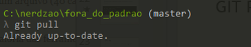

saindo dos Padrões
Created by Mariana Gomes
Quem sou eu
|

|
O que é Controle de versão?
Sistema que registra as mudanças feitas em um arquivo ou um conjunto de arquivos ao longo do tempo de forma que você possa recuperar versões específicas.Decisão sábia!
- Reverter um arquivos ou projeto inteiro para um estado anterior.
- Comparar mudanças feitas ao decorrer do tempo.
- Ver quem foi o último a modificar algo que pode estar causando problemas.
- Pode controlar tudo sem maiores esforços.
É Importante por qual motivo?
- Requisito e diferencial para atuar na área de TI.
- Ajuda organizar o desenvolvimento do projeto entre os desenvolvedores.
- Possibilidade de várias pessoas trabalharem no mesmo projeto.
- Contribuir para outros projetos abertos.
Tipos de controles de versão

|

|

|

|
|
GIT que magia é essa?
Git e github são diferentes
|
|
|
|

|
Empresa que usa o git
Instalação do GIT
- Windows: https://git-for-windows.github.io/
- Mac: Acesse https://git-scm.com/download/mac
- Linux:
- yum install git-core (Fedora)
- apt-get install git (Debian-likes)
Usando o terminal
Alguns comando básicos
- Cd – acessa as pastas
- Ls – lista arquivos em um diretório.
Usando o github
FORK
Para contribuir com outros projetos abertos no GitHub faremos um FORK
FORK
Agora você tem uma cópia do projeto listada em sua lista original de repositórios
GIT INIT
Retorna a mensagem de inicialização de repositório
GIT Clone
baixar o repositório para sua máquina
GIT Clone
git clone (link do repositório)
Git add . e Git Status
- Para adicionar as alterações do projeto usamos o Git add .
- Podemos usar o git status para checar os arquivos que alteramos.
GIT COMMIT
- Enviaremos os arquivos para o repositório de origem usaremos o commit.
- Salva as alterações no repositório com um mensagem.

GIT PUSH
- Envia as novas modificações para o repositório de origem (origin)
GIT LOG
- Exibe todos os históricos de alterações do projeto.
GIT BRANCH/CHECKOUT
- Permite que várias possam trabalhar em um mesmo projeto em áreas diferentes são chamadas de branch.
- Todas as alterações são feitas por padrão em uma branch local chamada master.
Criando GIT BRANCH
git checkout -b beta
GIT BRANCH subindo modificações!
git push origin beta
GIT MERGE
Realiza a junção das alterações da Branch beta com a master
GIT PULL
Baixa código atualizado do repositório remoto.

GIT DIFF
- Mostra as diferenças no conteúdo dos arquivos/diretório.
- Resultado em vermelho é o que estava escrito originalmente.
- Em verde o que foi alterado.
GIT HELP
- git help: mostra resumo dos principais comandos
- git help –a: mostra todos os comandos do git
GIT IGNORE
- Arquivos restritos para versionamento
- Arquivos de logs
- Arquivos de multimídias
- Arquivos gerados pelos sistemas
Pull request
Requisição feita para o administrador daquele repositório para que possa revisar ou não as alterações realizadas.
Links utéis
Obrigada!
Twitter:@mmariana_gomes
telegram:@mmariana_gomes
github:@marianagomesjob